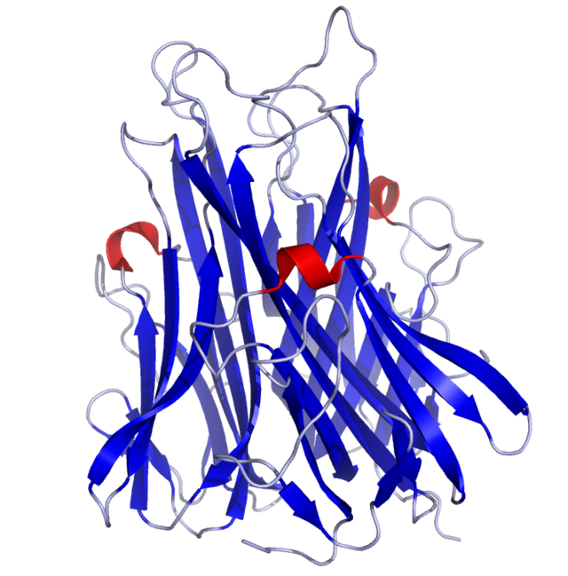

Fatores de necrose tumoral (TNFs) são duas proteínas, uma secretada por macrófagos (TNF-α) e outra por linfócitos (TNF-β), que exibem ação citotóxica direta, podendo matar células tumorais e mesmo alguns agentes patogênicos, além de desencadear uma série de ações imunopotencializadoras e pró-inflamatórias, sendo considerados potentes mediadores do processo inflamatório.
O TNF-⍺ é um mediador inflamatório muito mais relevante do que o TNF-β, que tem papel restrito.
Medicamentos inibidores do TNF-α (p. ex.: infliximabe) foram colocados no mercado com foco em tratar artrite reumatoide e outras artropatias crônicas.
Estrutura química do fator de necrose tumoral (TNF)-α.
